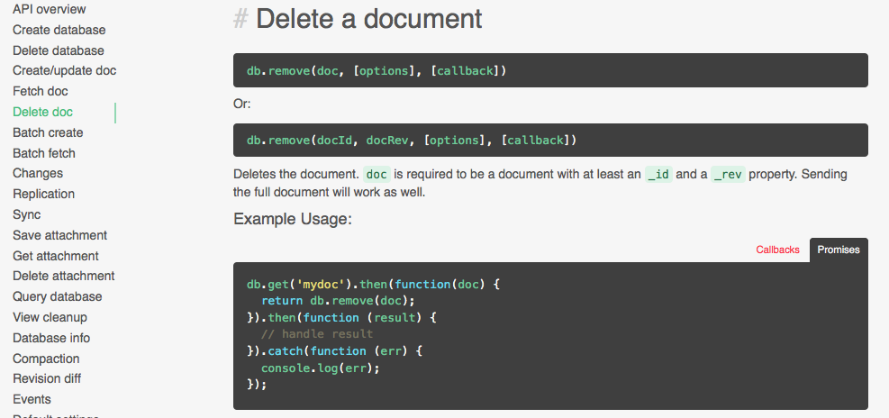
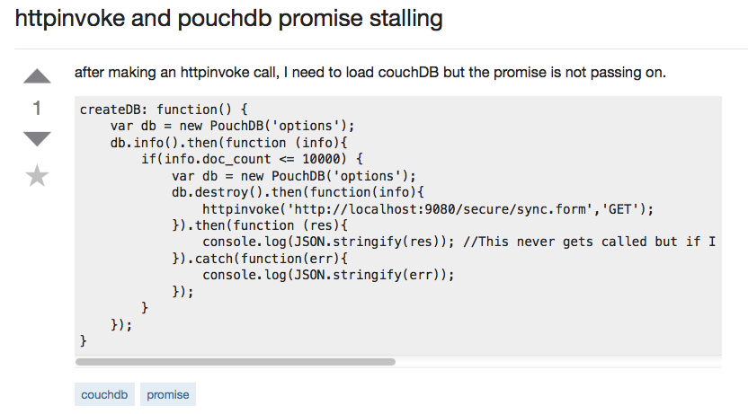
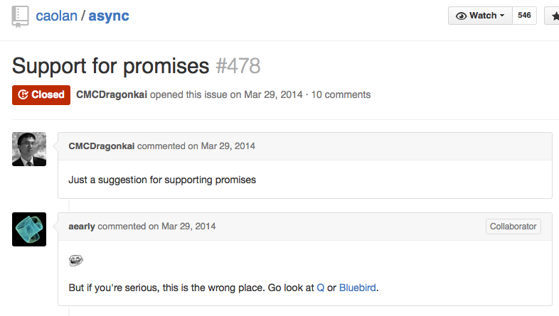
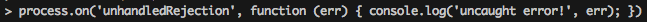
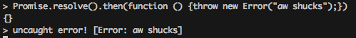

Understanding promises
Nolan Lawson
So the reason I'm standing in front of you right now
is because I wrote this article on promises.
I wrote this article, which has been described rather accurately
as a "tutorial disguised as a rant." That's pretty much what it is.

I wrote it because I work on a very promise-heavy open-source library
called PouchDB, and I was tired of perusing the questions on
Stack Overflow and seeing the same errors again and again.

Or rather, I was tired of having to explain everything again and again -
how not to use promises as if they were callbacks, how to
use for-loops within a promise, etc. So I did write it all
as a kind of rant, in one Saturday afternoon, and I was really surprised
at how popular it was. It's still getting shared on Twitter,
and I've gotten tons of feedback from people telling me how useful
it was.
What is the difference between these 4 promises?
doSomething().then(function () {
return doSomethingElse();
});
doSomething().then(function () {
doSomethingElse();
});
doSomething().then(doSomethingElse());
doSomething().then(doSomethingElse);
Part of its popularity was due to starting off with this hook,
which was a quiz disguised to expose common errors with
promises. But part of it was also just people's general lack of
understanding of promises, and their need for a nice concise
explanation of common errors.
So apparently there was a big need for this kind of rant/tutorial.
I think the reason for that is that a lot of us are using promises
because we feel like we have to; it's good for us. Or rather,
promises kind of rushed onto the scene a few years ago, and we've
been struggling to keep up, especially with libraries that
kinda-implement promises or kinda-don't, or use this weird
promise from another dimension called "deferreds." Or they're migrating
from non-promises to promises, as Angular has, and it's kinda not
clear which is which.
But promises are being trumpted as the exciting new technology,
and a lot of us feel compelled to go along with it. So we dip our
toes in here and there, maybe try a taste of promsies in one
library, while in another library we're still clinging to our
familiar callback patterns like a life raft. All the while, we're
not really taking a step back and trying to figure out what
the point of all this stuff is, anyway.
That's what this talk is about. So if you've already read my article,
I can assure you you won't be bored, because there will be plenty of
new material. and if you haven't read it, don't worry, because I won't
leave you behind.
Oh and one more thing. I am sick to death of these "I promise to call
you back"-style puns, so you won't find them in this talk. OK, they
were funny the first time, I get it, but please, can we just agree
to stop with these? If I see one more of these, I'm going to start
a chane.org petition, I swear.
Why do we need promises in JavaScript?
Promises aren't unique to JavaScript, and they've gone by
other names in other languages - futures, thunks, etc. But
they're uniquely useful in JavaScript due to the design
of the language.
Java
public String readFile(String filename) throws IOException {
String output = "";
BufferedReader buff = new BufferedReader(
new InputStreamReader(new FileInputStream(new File(filename))));
while (buff.ready()) {
output += buff.readLine() + "\n";
}
buff.close();
return output;
}
Here's an example from Java. Now, what's
interesting here is that, from the point of view of a beginner,
there's no difference between this part of the code, "readLine()"
and the rest of tit. But if we were to promise this function
without our larger code, it'd probably be the readLine() that ends
up costing the most, especially if we're working with large files.
In short, bottlenecks tend to pile up exactly where we're doing these sorts
of InputStream operations.
You might asay that the IOException communicates that, but there are
plenty of parts of the Java core libraries that throw errors like
this, e.g. the JSON parser or SAX parser, which doesn't require any I/O.
Python
import requests;
response = requests.get('http://oursite.com/ourapi/');
json = response.json()
print json
Here's an example from Python. Again, we really have no reason,
as a beginner, to suspect that that second line will probably
be much slower than any other line in our code. But of course an
experienced developer will know that this HTTP server could take
a very long time to respond, or not at all, so you better keep
an eye on that part of the code.
JavaScript is single-threaded
https://gist.github.com/hellerbarde/2843375
JavaScript
var xhr = new XMLHttpRequest();
xhr.onerror = function (err) {
console.log('whoops, got an error', err);
};
xhr.onload = function (res) {
console.log('woohoo, got a response', res);
};
xhr.open('GET', 'http://oursite.com/ourapi/');
The guy who designed JavaScript, Brendan Eich, was pretty smart.
and one of the interesting design decisions he made for
JavaScript was to make it single-threaded, with callbacks for
AJAX requests. In JavaScript, this allows the single thread to
continue working, e.g. responding to user clicks or updating
the DOM, even when an HTTP request is ongoing.
JavaScript - jQuery ajax()
$.ajax("http://oursite.com/ourapi/", {
success: function (res) {
console.log("woohoo, got a response", res);
},
error: function (err) {
console.log("whoops, got an error", err);
}
});
console.log('firing request');
The guy who designed JavaScript, Brendan Eich, was pretty smart.
and one of the interesting design decisions he made for
JavaScript was to make it single-threaded, with callbacks for
AJAX requests. In JavaScript, this allows the single thread to
continue working, e.g. responding to user clicks or updating
the DOM, even when an HTTP request is ongoing.
Node.js
var fs = require('fs');
fs.readFile('/tmp/myfile.txt', 'utf-8', function (err, text) {
if (err) {
// handle error
} else {
// handle success
}
});
This style continued with Node.js, and in fact it's the primary
reason Ryan Dahl chose JavaScript for his single-threaded server
framework. Here's a filesystem operation, which doesn't exist
in the browser, but which looks very similar to the ajax
request we saw earlier.
So, in JavaScript, it's extremely obvious when a piece of code
goes to the disk or to the network, because there's this
awkward callback style you have to deal with. And it turns out
this is kind of nice, because as this infographic shows,
the network is much slower than the disk, which is much slower
than anything done in-memory. My takeaway is: disk is about a
zillion times slower than in-memory, and the network is about
a zillion times slower than that.
So JavaScript makes it really obvious when you're going to disk
or the network, which can be nice for identifying bottlenecks
or for ensuring that your single-threaded language doesn't spend
any time waiting on I/O. And when webapps were using some light
jQuery for a few ajax requests, which were almost never chained
together, this was almost tolerable. But when Node.js came along,
it just ended up being a huge hassle to write everything in this
pyramid style when you just want to do a few I/O operations.
The Node community tried to solve this early on by standardizing
everything related to callbacks. But really this was just a convention,
and nobody was forced to adhere to it, and people frequently
messed it up. A common source of errors was accidentally calling
a callback twice, or zero times, or with both an error and
a result, etc. Lots of libraries sprang up proposing to solve
this problem, such as async and q. But in fact they had very different
and incompatible approaches, and jQuery and Angular had their own,
so out of all this mess a few very smart people managed to hammer
together a spec, and got almost everybody to agree on a small core
of best practices, which they called the Promises A+ spec. Today
this is enshrined in ES6, and it's in every major browser and soon
Node.js, so it's here for the long haul. The only major holdouts
are, sadly, jQuery and async. But you can convert their style to
the official style, or just not use them.
Okay, so everybody started using promises, and everything was great,
right? Well, not exactly. First off, there is some confusion
about which libraries and browsers actually use promises, and then
second off there is confusion about how to use promises correctly.
Let's talk about the libraries and browsers first.
Promises to the rescue!
doSomething().then(function () {
return doSomethingElse();
}).then(function () {
return doAnotherThing();
}).then(function (result) {
// yay, I'm done
}).catch(function (err) {
// boo, I got an error
});
OK, how do I use promises?
Promises with a capital P
Promises/A+ spec
ES6 Promises (same thing)
window.Promise in browsers
global.Promise in Node/io.js
✖ Node 0.10✔ Node 0.12✔ io.js
Node-style → Promise-style
var bluebird = require('bluebird');
var fs = bluebird.promisifyAll(require('fs'));
fs.readFileAsync('/tmp/myfile.txt', 'utf-8').then(function (text) {
// handle success
}).catch(function (err) {
// handle error
});
Things that are not Promises
async
jQuery deferreds
Angular deferreds
Anything spelled "deferred"
Things that are not Promises

Standard Promise APIs
var Promise = require('some-valid-library');
var promise = new Promise(function (resolve, reject) {
// roll your own promise inside here
});
promise.then();
promise.catch();
Promise.resolve();
Promise.reject();
Promise.all();
Promise.race();
Uncaught error - silently ignored :(
Promise.resolve().then(function () {
throw new Error("aw shucks");
});
Node, io.js, and most browsers don't log this.
Uncaught error - warning logged! :)
Bluebird and Chrome native Promises show warnings.
io.js - unhandledRejection event


Async stacktraces in Chrome
Bluebird 3.0 warnings
With ES6 promises
var db = new PouchDB('mydb');
db.post({}).then(function (result) { // post a new doc
return db.get(result.id); // fetch the doc
}).then(function (doc) {
console.log(doc); // log the doc
}).catch(function (err) {
console.log(err); // log any errors
});
With ES7 async/await
let db = new PouchDB('mydb');
try {
let result = await db.post({});
let doc = await db.get(result.id);
console.log(doc);
} catch (err) {
console.log(err);
}
Promises are confusing.


 https://gist.github.com/hellerbarde/2843375
https://gist.github.com/hellerbarde/2843375